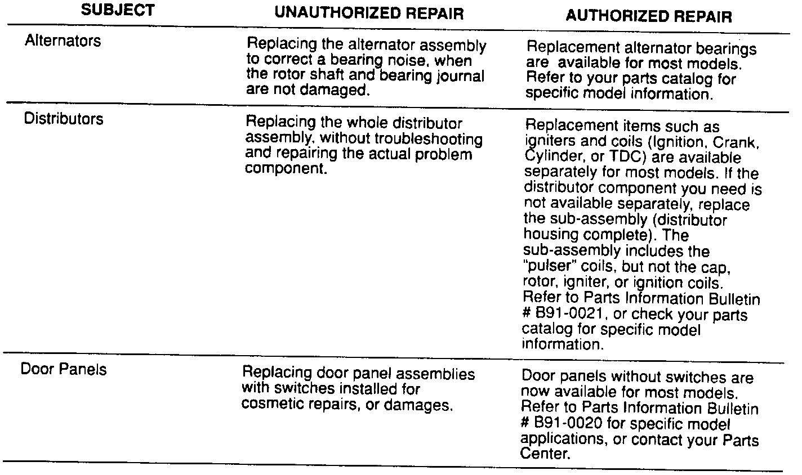

Assembly vs. Component Replacement Guidelines
June 3, 1991BULLETIN NO.
91-032
YEAR
ALL
MODEL
ALL
VIN APPLICATION
ALL
Assembly Replacement vs. Component Replacement

The proper warranty repair procedure is to replace individual component parts, rather than complete assemblies. Refer to your Service Operations Manual under section 9, paragraph 9.3. The assemblies will no longer be accepted on warranty claims.